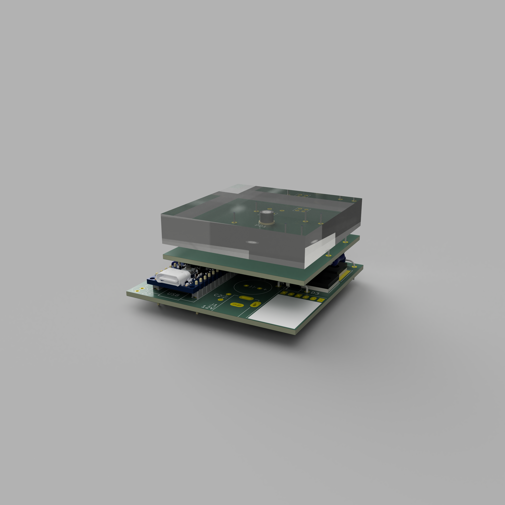

記事の期間が詰まってしまいました．
偶然ですね，更新間隔にはあまり期待していただきたくないところですが...
そんなことはさておき，試作機2号のデータを作成したのでそれについて書き残します．
まず，最初にこれだけ言っておくのですが，この研究の成果は成功したならオープンにしようと考えています．
もちろん成功したらの話ではあるのですが．
せっかく安くしたのに僕しか作れないとかになったら意味がないと思っているからですね．
いっそのこと皆さんに作って皆さんに売ってほしいと願うくらいです．
ただし，現段階でデータを盗用するのはやめてください．
ということで本題に戻ります．
先日に試作機1号を作ったわけですが，まぁまぁ終わっていました．
僕がやらかしたミスは以下の通りです．
-
DCジャックのフットプリントのミス
- スルーホール形状ミス
- 電源の正負ミス
- タクトスイッチの寸法ミス
- ネットクラス割り当てミスによる配線ミス
お家芸の空中配線によってショート箇所がないことまでは確認しましたが，これはひどかったです．
EasyEDAの自動配線機能はネットクラスが正しく割り当てられていることを条件に使用できる機能です．
回路図上で変な線飛ばしをしたがためにネットクラスが食い違い回路として成立していない箇所がいくつもありました．
そして1号のときは本来は2枚に分ける基板を1枚の同一基板上にむりやり押し込んでしまいました．
おかげさまでノイズも何も，論外な状態でしたので修正します．
ということで完成したデータは以下のようになります．

KiCadから書き出した(一部)部品実装済み基板3Dデータを，ピンヘッダ・ピンソケットの高さ，位置で合わせた上でプラスチックシンチレーターに見立てたガラスブロックをかぶせた画像です．
かっこいいでしょ，イケイケでしょ
この基板，結構コンパクトで下側の一番大きな基板ですら60mm四方に押し込んでいます．
シンチレーターのサイズが大体50mm × 50mm × 10mmなので，そのサイズからかけ離れないように設計しました．
3月22日にまた小林先生のもとへ訪問するので，そのときに細かい修正と，可能であればベタGNDなどを追加して2号を発注しようと思っています．
お楽しみに．